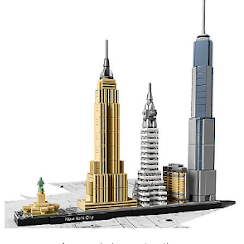

description du produit
Fêtez la diversité architecturale de New York avec ce modèle détaillé en briques LEGO®. La collection LEGO® Architecture Skyline offre des modèles adaptés à l'exposition
à la maison et au bureau, et a été développée pour toutes les personnes qui s'intéressent au voyage, à la création, à l'histoire et à l'architecture. Chaque ensemble a une échelle adaptée
pour donner une idée précise de la taille comparative de chaque structure, avec une représentation en couleurs réaliste.
Cet ensemble comprend le Flatiron Building, le Chrysler Building, l'Empire State Building, le One World Trade Center et la Statue de la Liberté, et un écriteau décoratif “New York”.
Spécificités
- Comprend le Flatiron Building, le Chrysler Building, l'Empire State Building, le One World Trade Center et la Statue de la Liberté.
- Le livret inclus contient des informations sur le designer, l'architecture et l'histoire de chaque structure, ainsi que des faits historiques sur New York et son héritage architectural (en anglais et en italien uniquement. Autres langues disponibles en téléchargement sur LEGO.com/architecture). Demande la permissionà tes parents ou à ton tuteur avant d'aller en ligne.
- Inclut une plaque de base 4x32 avec un écriteau décoratif "New York".
- La ligne de produits LEGO® Architecture célèbre le monde de l'architecture par le biais de la brique LEGO, pour toutes les personnes qui s'intéressent à la création, à l'histoire et à l'architecture.
- Mesure 26 cm de haut, 25 cm de large et 4 cm de profondeur.
Caracteristiques
| id.prduit |
Age |
Nombres de piéces |
Prix |
| 21028 |
mini |
maxi |
598piéces |
49.99£ |
| 12 ans |
99 ans |